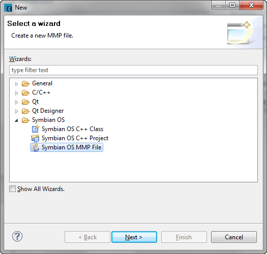
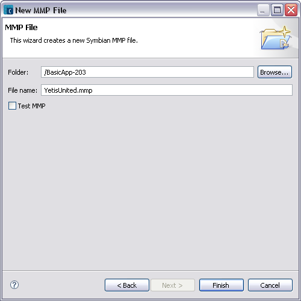

Use the Symbian OS MMP File wizard (figure 1) to create a new MMP project file for the currently selected project. Symbian projects are defined by an .mmp file which specifies the essential elements of the project. All details of the project lifecycle are handled by the IDE. There is no editable makefile the user can edit to modify the build behavior of the project.

Figure 1 - Select a wizard page in the New window
OR

Figure 2 - MMP File page in the New MMP File window
The new MMP file is created in the destination folder and shown in the MMP editor.